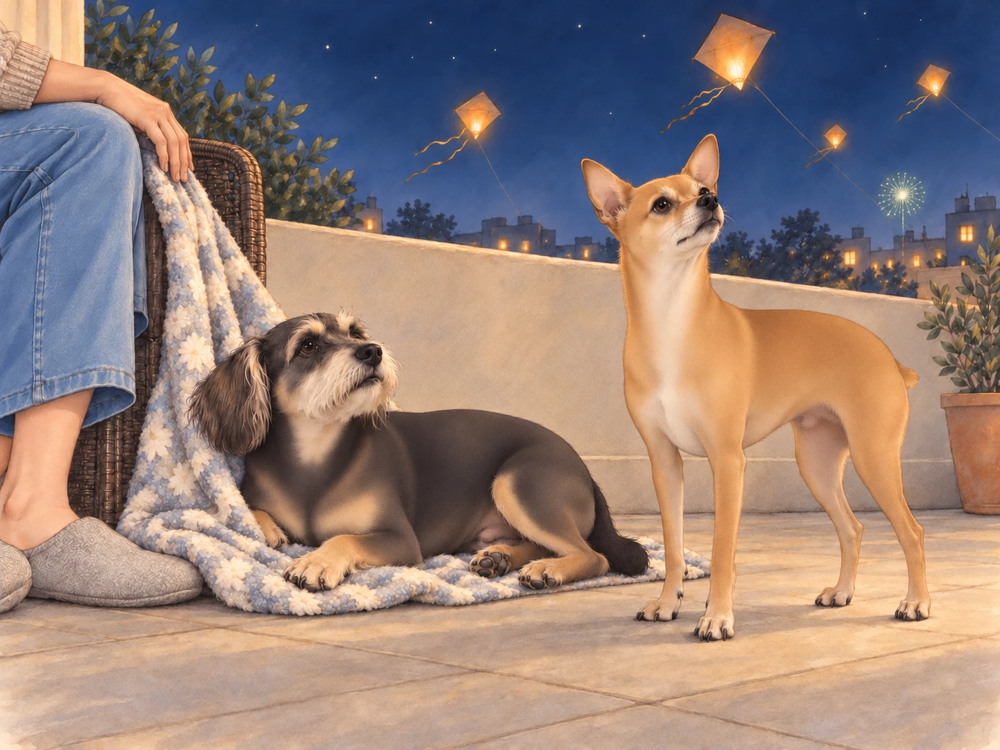
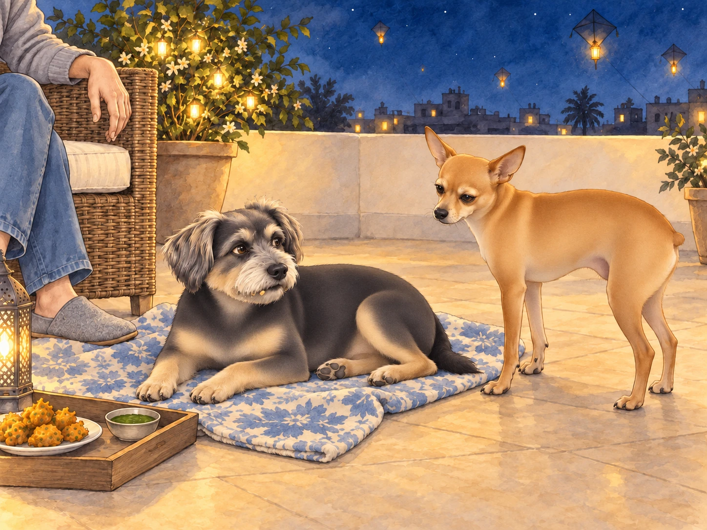
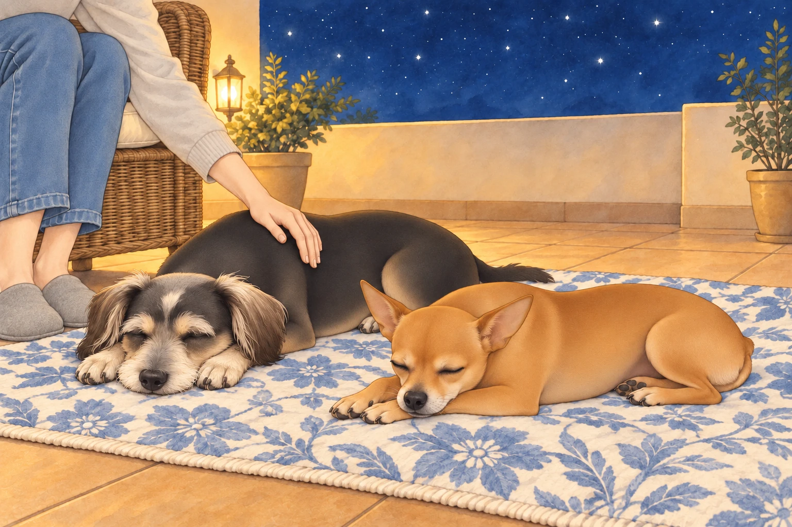

On the second evening of Uttarayan, Buddy brought his blanket closer to Heather’s chair. He had found a way to watch the sky without having to watch Neet as well. He took a corner in his teeth and pulled. Nothing happened. He pulled harder, then looked down at the two front paws with which he was firmly holding his own blanket in place.
Buddy stepped off, moved it one careful pace and lay down as though this had all been part of the arrangement. On Meera’s terrace, the kite spools were finally still.
Neet stood inside the low terrace wall, his Dorito-shaped ears twitching. "Look at the sky, Buddy! It’s like the stars are coming down to play!"
Buddy, curled up on a soft blanket near Heather, lifted his head to peer at the glowing lanterns now rising into the air. "They’re not stars, Neet. Those are kites with lanterns."
Heather smiled, sipping her chai as she pointed to one of the glowing orbs. "It’s called a ‘tukkal.’ People attach small lanterns to their kites so they can fly them at night. Isn’t it beautiful?"
Neet watched the glowing kites drift higher. "Like fireflies," he said. "But much better organized."
One drifted left. Neet took two steps left. It drifted right. He took two steps right.
"You can watch them sitting down," Buddy said.
"Then who’s following that one?"
The terrace next door lit up as a group of neighbors began setting off small fireworks. Sparklers hissed and crackled, sending golden showers into the night. Neet yipped excitedly, running in circles. "Fireworks! Oh, Buddy, look! It’s like the sky is cheering for us!"
Buddy pulled the edge of his blanket beneath Heather’s hand and tucked himself closer. He wanted to keep watching; he did not want another rocket quite so near. "It’s a little loud, but... it is kind of pretty," he admitted as a rocket burst green and silver overhead.

Meera brought out a tray of steaming hot pakoras and a small bowl of sweet chutney, setting it down near Heather. "The nights of Uttarayan are my favorite," she said, sitting cross-legged on the terrace. "There’s something magical about the way the whole city feels alive, even in the quiet."
A firework cracked next door. Meera waited for it to finish.
"The occasional quiet," she amended, and Heather nearly spilled her chai.
Neet quickly nosed his way to the pakoras, his tail wagging furiously. Heather laughed, breaking off a tiny piece for him. "Don’t get used to this, Neet. You’re already spoiled."
Buddy watched as Heather handed him a small, soft pakora. He nibbled it slowly, savoring the warmth and spices. "It’s nice," he murmured.
Neet had already finished his piece. He looked at Buddy’s.
"You’re missing a kite," Buddy said.
Neet’s head shot up. Buddy finished his pakora. By the time Neet looked back, there was only a crumb in his beard.
"Which kite?"
Buddy swallowed. "You found it."

Heather brushed the crumb from his beard. "Very peaceful down here, isn’t it, Buddy?"
As the night deepened, the wind carried the faint hum of music from distant terraces. Heather leaned back, her gaze fixed on the lantern-lit kites that continued to dance in the sky. Neet settled beside her, his head resting on her lap as his wide eyes tracked every glowing light.
"Do you think the kites ever get tired?" Neet asked, his voice unusually soft.
Buddy, now half-asleep, mumbled, "Maybe. But they look happy up there."
Heather stroked Neet’s fur gently. "They’re like dreams, soaring as long as the wind carries them."
Neet’s tail wagged lazily at the thought. "Then I want to be a kite. I’d fly higher than anyone."
"You already do, Neet," Heather said with a smile. "You’re my little high-flyer."
Buddy opened one eye. "Meera’s down here with the tray."
Neet considered the height of the sky and the height of the pakoras. "I’d come down at sensible intervals."
The terrace grew quieter as the night wore on, but the magic lingered. A final burst of fireworks painted the sky with streaks of red and gold, their reflection shimmering in Buddy’s sleepy eyes. Neet, still wide awake, gazed at the lanterns as they floated out of sight, one by one, until only the stars remained.
"This was the best day ever," Neet whispered, his voice carrying a rare hint of calm.
Heather drew both dogs close. Buddy shifted to make room on his blanket. Neet stopped searching for the lanterns and closed his eyes.

For once, he let the sky look after itself.